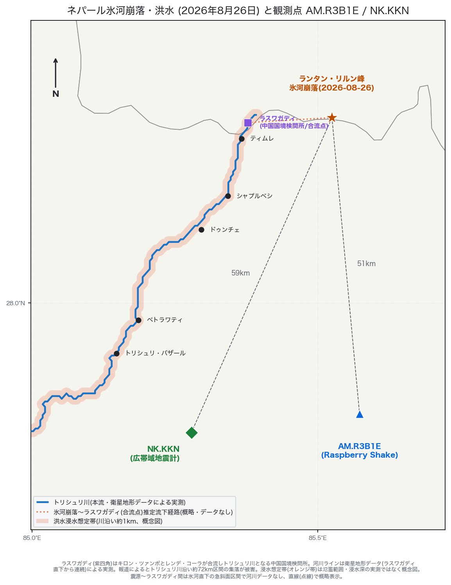
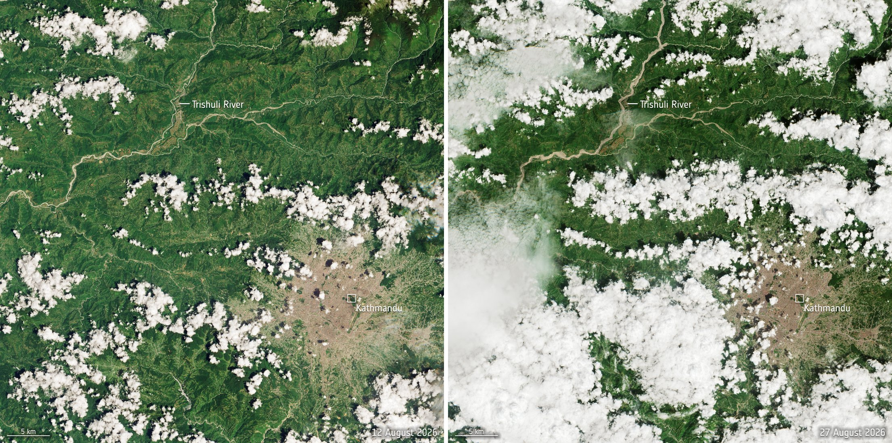
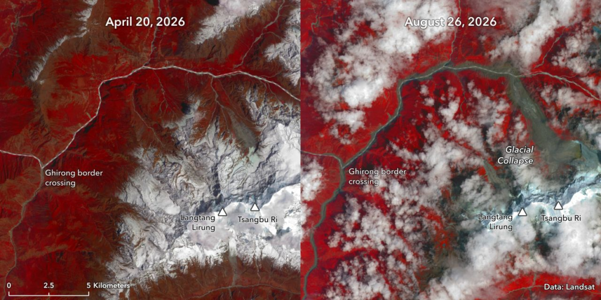
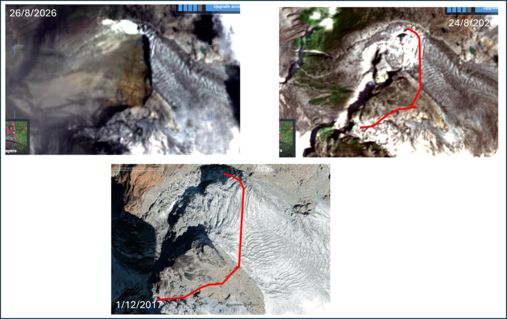
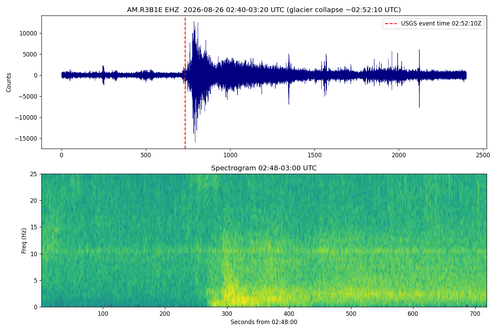
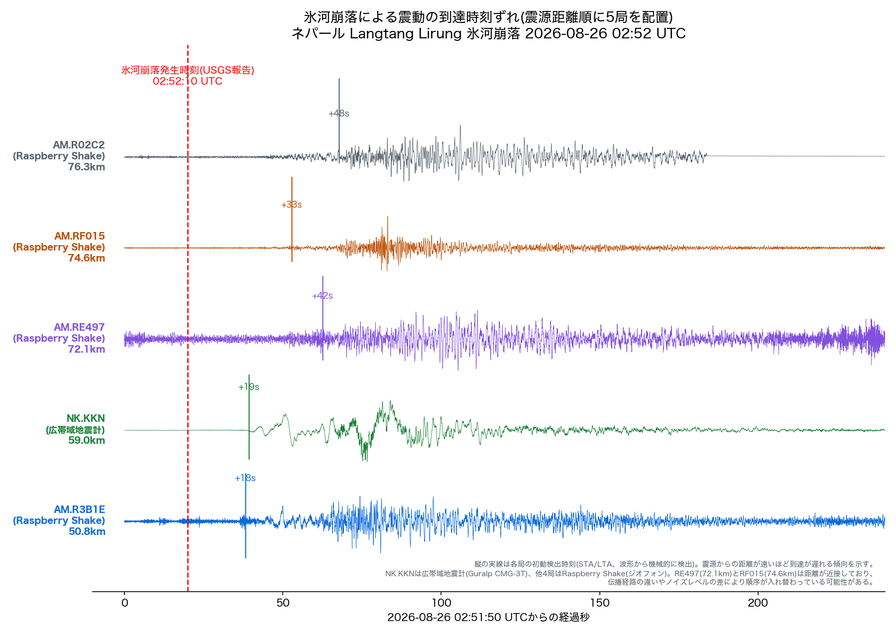
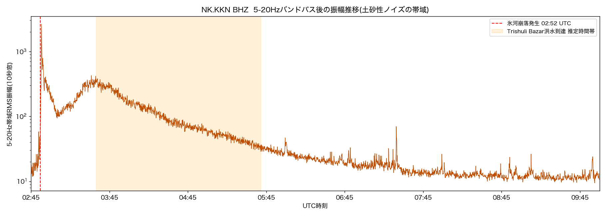

地震観測記録 · 2026年8月26日 · ネパール
2026年8月26日02時52分（協定世界時、UTC）、ネパールのランタン・リルン峰で氷河が崩落した。この崩落を起点に土石流と洪水が下流を襲った。
本レポートでは、震源近くにある2つの地震計、Raspberry Shake公開観測点AM.R3B1Eと研究機関の広帯域地震計NK.KKNが記録した実測波形を用い、崩落の瞬間と、その後に続いた下流の異変を読み解く。死傷者数や避難状況といった被災状況の報告ではなく、地震計の波形から崩落と洪水の物理的な挙動を追う、地学的な観測記録である。
崩落地点は中国のチベット自治区との国境に近く、対岸でも人的被害が報じられている。ただし中国側の地震観測データや被災状況を伝える一次情報の情報源は確認できなかった。そのため本レポートは、ネパール側で確認できた情報だけで構成している。
なお本レポートは公開データを解析した私的な記録であり、公式の被害調査や地震学的知見に代わるものではない。
崩落地点はランタン国立公園内にあり、中国（チベット自治区）との国境に近い。崩れ落ちた氷と岩は、キロン・ツァンポとレンデ・コーラという2つの川が合流するラスワガディ国境検問所を経て、トリシュリ川に流れ込んだ。この川に沿ったティムレ・シャプルベシ・ドゥンチェ・ベトラワティ・トリシュリ・バザールの各集落が被害を受けた。

地図上のオレンジ帯は、川沿い約1kmを機械的に塗った浸水想定帯であり、実測の氾濫範囲や浸水の深さを示すものではない。震源からラスワガディまでの区間は、流路の実測データが手に入らなかったため、直線（点線）で概略を示すにとどめている。
欧州宇宙機関（ESA）は、センチネル2号衛星（光学カメラ、解像度10m）で撮影した崩落前（2026年8月12日）と崩落後（2026年8月27日）の写真を並べて公開している。
ただし、この写真が写しているのはトリシュリ川の中流域からカトマンズ盆地まで（約52km四方）で、氷河が崩れた震源地点そのもの（カトマンズから北へ約66km）は範囲に入っていない。震源地点そのものの崩落前後を比べた写真は後の節で扱う。

崩落前（左）は、トリシュリ川が細く澄んだ流れとして写っている。崩落後（右）は川幅が明らかに広がり、土砂を含んだ濁流特有の明るい茶色に変わっている。写真の左端に見える白い帯は、土煙か水蒸気と見られる。これは震源から流れ下った土石流と洪水が下流に到達した跡であり、崩落そのものの痕跡ではない。
氷河科学の専門サイト「AntarcticGlaciers.org」は、崩落前（2026年4月20日）と崩落当日（2026年8月26日）を撮影したLandsat衛星の写真を掲載している。近赤外線を使って植生や氷雪を強調した偽色画像で、ランタン・リルン峰、ツァンブ・リ峰、ギロン国境検問所（ラスワガディ国境検問所の中国側）が両方の写真に写っている。8月26日の写真には「氷河崩落地点」という位置ラベルが付いている。

崩落前（左）は、ランタン・リルン峰とツァンブ・リ峰の周囲が白い氷河と雪渓に覆われている。崩落当日（右）はその一部が失われ、下に隠れていた暗い岩肌と土砂が露出している。崩落当日の写真は雲が多く、輪郭がはっきりしない部分も残る。
データ提供は米国地質調査所のLandsat、画像作成はGunjan Silwal氏（AntarcticGlaciers.org掲載）。

崩落地点をさらに拡大し、2017年12月・2026年8月24日（崩落前）・2026年8月26日（崩落当日）の3時点を並べた写真もある。赤線は、崩落で氷河が剥がれ落ちた輪郭を示す。2017年時点と比べると、山の形と氷河の広がりが大きく変わっていることがわかる。
出典は同じくAntarcticGlaciers.org掲載の画像で、撮影者と提供元の詳細は記載がない。
R3B1Eは、市民が個人で設置・運用するRaspberry Shakeという地震計ネットワークの1局で、震源に最も近い場所（緯度27.83°/経度85.57°）にある。この観測点が公開している波形データを取得し、氷河崩落の発生時刻前後を解析した。記録は上下動を捉える1チャンネル（サンプリング周波数100Hz）だけで、機材は業務用地震計ほど高精度ではない。

波形図の赤い破線が、米国地質調査所の報告する発生時刻（02:52:10 UTC）を示す。その直後から揺れが急に大きくなり、20分以上にわたって続いた。
下段のスペクトログラム（時間ごとの周波数成分を色の濃淡で示した図）を見ると、0–5Hzという低い帯域にエネルギーが集中している。これは、地震そのものというより、大量の土砂や氷雪が動くときに特有のパターンである。
震源から観測点までは約51km離れている。この距離なら、地震波（P波）が届くまで十数秒かかると見積もれる。実際の検出時刻もこの見積もりと合っている。
氷河崩落の瞬間、実際にデータを記録していた観測点は5局あった。震源に近い順に、R3B1E（50.8km）、NK.KKN（59.0km）、RE497（72.1km）、RF015（74.6km）、R02C2（76.3km）である。この5局を震源からの距離順に並べ、揺れが届くまでの時間差を1枚のグラフにした。NK.KKNだけが研究機関の広帯域地震計（Guralp CMG-3T）で、残る4局は個人設置のRaspberry Shakeである。

最も近いR3B1Eが発生時刻の18秒後という最速で揺れをとらえ、NK.KKN（19秒後）が続いた。遠い観測点ほど到達が遅れ、最も遠いR02C2では48秒後だった。この段差が、震源から遠ざかるほど揺れの到達が遅れる様子をそのまま示している。NK.KKNは他の局よりノイズが少なく、波形の立ち上がりもはっきり見える。
なおRE497とRF015は震源からの距離差が2.5kmしかない。この2局で到達順が逆転しているのは、地形による揺れの伝わり方の違いか、観測点ごとのノイズレベルの差による誤差の範囲内と考えられる。
NK.KKNはカカニにあるネパール地震局の定常観測点で、研究機関が備え付けた広帯域地震計（Guralp CMG-3T）を使っている。R3B1Eのような個人設置のRaspberry Shakeより雑音が少なく、かすかな揺れも拾いやすい。
氷河が崩れた瞬間の揺れとは別に、下流を流れ下る洪水そのものが地面を揺らしていないか調べた。土砂や岩が川底にぶつかる音は5–20Hzの帯域に出やすいため、この帯域だけを取り出して振幅の推移を追った。
02:52 UTCに起きた崩落の瞬間のピークとは別に、03:15から05:45 UTCまでの約2.5時間、揺れがゆるやかに高まる時間帯があった。
この時間帯は、ウィキペディアが記録する洪水の到達記録と重なる。ベトラワティ観測所は9時20分（現地時間、UTC 03:35）に送信を止め、プルケ・マレク観測所は11時26分（現地時間、UTC 05:41）に水位が危険水準を超えたと記録している。
ただし、地震計の記録だけから「この揺れは洪水そのものが原因だ」と言い切る手法は確立していない。状況が重なっているという意味で強い状況証拠ではあるが、確定した証拠ではない。

前日の同じ時間帯と比べても、揺れの大きさはおよそ2倍だった。1日の中で規則的に繰り返す雑音のパターンだけでは、この上乗せ分を説明できない。
揺れが続く時間の長さと、山を描くようなゆるやかな増減のしかたは、単発の地震特有の波形とは異なる。土石流や洪水が流れ下るときに続く、連続的な地面の揺れだと考えれば無理がない。
| ネットワーク.局 | 震源距離 | 種類 | 備考 |
|---|---|---|---|
| AM.R3B1E | 50.8km | Raspberry Shake（ジオフォン、EHZ） | 可搬型市民科学局、震源に最も近い実データ保有局 |
| NK.KKN | 59.0km | 広帯域地震計（Guralp CMG-3T、BHZ/BHN/BHE） | ネパール地震局Kakani定常観測点 |
| NQ.KNSET | 73.4km | 強震計（加速度、NetQuakes、HNZ/HNN/HNE） | 米国地質調査所NetQuakesプログラム、サインブ |
| AM.RE497 | 72.1km | Raspberry Shake（ジオフォン、EHZ） | 記録断面図に使用 |
| AM.RF015 | 74.6km | Raspberry Shake（ジオフォン、EHZ） | 記録断面図に使用 |
| AM.R02C2 | 76.3km | Raspberry Shake（ジオフォン、EHZ） | 記録断面図に使用 |
| IO.EVN | 131.5km | 広帯域地震計（Guralp CMG-3ESPC、HHZまで） | エベレスト・ピラミッド観測所、未解析 |
氷河崩落の瞬間、Raspberry Shakeのネットワークに登録されている観測点は6,000局を超えていた。だが実際にデータを送っていたのは、上の表に挙げた一部の局だけだった。
観測点として登録されていても、実際には電源が入っていない、通信が切れているといった理由でデータが届かない例が多い。震源からの距離だけを見て観測点の使いやすさを判断せず、データが実在するかどうかを1局ずつ確かめる必要がある。